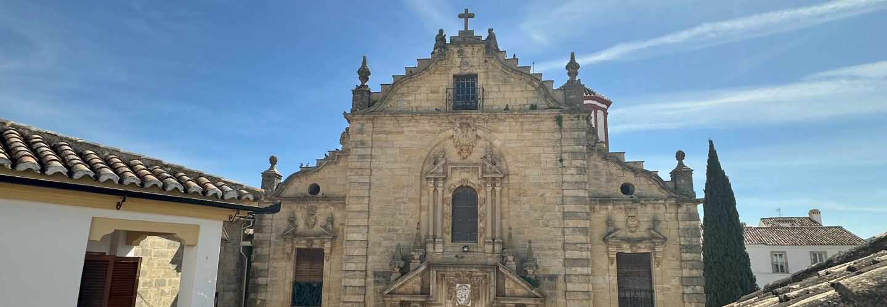

Nuestras guías y mapas interactivos
Siempre tratamos de ofrecer el mejor servicio a nuestros huéspedes, y facilitar su visita al máximo. Es por eso que hemos creado tres guías con toda la información que necesita saber sobre Ronda y sus alrededores, además de mapas interactivos donde puedes localizar todos los sitios que le recomendamos visitar. Reserva con nosotros y descubre Ronda, y la provincia de Málaga.

Donde estamos?
Nuestros apartamentos están situados justo en el centro de la ciudad, a un par de metros de la calle principal (Calle de La Bola), a 10 minutos del centro histórico, y cerca de todo lo que necesite.
Los Descalzos
Los Descalzos Ángel
Los Descalzos
Los Descalzos Ángel
Plazas de parking gratuitas
Si viene en coche a Ronda, no se preocupe por dónde aparcar, le ofrecemos una plaza de aparcamiento gratuita en Parking Martínez Astein, situado en el centro de Ronda, a tan solo 5 minutos de los apartamentos.
Transporte público
Si no viene en coche, le mostramos la distancia desde los apartamentos hasta los principales puntos de transporte público de la ciudad. Para evitar la repetición, tomaremos como referencia un solo apartamento.